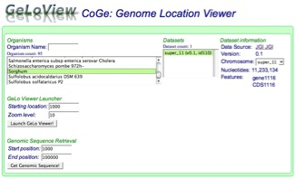
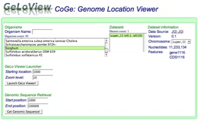
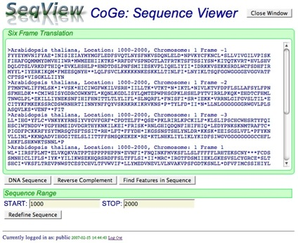
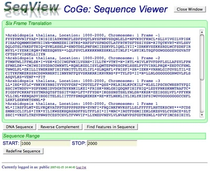

How do I use SeqView?
SeqView uses dynamic buttons, meaning the buttons displayed below the sequence change as necessary (i.e. if you are viewing the DNA sequence, that button will not be displayed as you would not need to use it).
In interface (1), there are three main buttons (in a row), and two more below used to alter the sequence length. "DNA Sequence" displays the genetic sequence for the feature chosen, while "Reverse Complement" gives the reverse complement sequence of the feature. "Protein Sequence"
gives the amino acid sequence associated with the feature (if available, such as with a gene). Below are two text entry fields, and two buttons: "Reset" and "Add to Sequence". To extend the sequence, type the number of bases you wish to extend the sequence, either upstream (5' of the sequence) or downstream (3' of the sequence), and then click "Add to Sequence". Upstream added values are displayed in red, while downstream added values are displayed in green. Click "Reset" at any time to return to the original feature sequence.
Interface (2) is slightly different. Instead of having a "Protein Sequence" button, it has a "Six Frame Translation" and "Find Features in Sequence" button. "Six Frame Translation" displays the six frame translation of the selected sequence range. "Find Features" displays the features (if any) contained within the genomic region whose sequence has been selected. The annotations for these features are display below the sequence box. Warning - this process is a little slow, and may take a few seconds to show results. *Please do not click the button multiple times if nothing is being displayed - this will only cause the request to start over, slowing the display of results further. Below is an option similar to the upstream/downstream addition of interface (1), except there is no color coding in the sequence.

Welcome to Seqview!
SeqView, our Sequence Viewer application, allows for quick and easy manipulation of sequence data from the CoGe genomes database for DNA and proteins. It is designed to allow a user to easily get a sequence, whether from a specific genomic feature (e.g. gene or transcript) or from a specified region of a genome. Once you have a sequence, SeqView also provides easy methods for generating the
sequence's reverse complement, find associated protein sequences, add additional upstream and downstream sequence, provide 6-frame translations, and find any genomic features in
a given segment of the selected genome.
How do I get to SeqView to view a sequence?
SeqView is accessible through different applications in CoGe. For example, when in FeatView [CoGe's application for finding genomic features by name (e.g. genes)], there is a button at the bottom of a Feature's annotation that says "Click for DNA sequence". This will load SeqView for that genomic feature. Another example is in GeLoView (CoGe's application for viewing genomic locations). This will load SeqView for the specified genomic region.

 

These two examples differ slightly in the sequence requested. In the case of a genomic feature, such as a gene, the feature may be broken up over several genomic regions (e.g. exons of a gene giving rise to the coding sequence) and need to be assembled to produce the sequence. In the case of a genomic region, the sequence is simply the start and stop positions of a chromosome. In either case, SeqView takes care of the details and produces the sequence you request and provides additional options for modifying your requested sequence.
What are the interfaces to SeqView for the different views of genomic sequence?

There are two separate interfaces associated with SeqView: (1) Viewing a Feature's genomic sequence, and (2) Viewing a user-defined genomic sequence from a selected genome. The sequence is always displayed in the green box, with a FASTA header giving the organism, the genome version, the chromosome, the location on the chromosome of the sequence viewed, the feature's name (if applicable), and the strand it's on (1 for 5'->3', -1 for 3'->5'). Below the sequence are a series of buttons. The first row manipulates the type of sequence being viewed (such as switching between a nucleotide sequence and an amino acid sequence). Below that, there are options to manipulate the length of the sequence being viewed.
 



How do I use SeqView?
SeqView uses dynamic buttons, meaning the buttons displayed below the sequence change as necessary (i.e. if you are viewing the DNA sequence, that button will not be displayed as you would not need to use it).
In interface (1), there are three main buttons (in a row), and two more below used to alter the sequence length. "DNA Sequence" displays the genetic sequence for the feature chosen, while "Reverse Complement" gives the reverse complement sequence of the feature. "Protein Sequence"
gives the amino acid sequence associated with the feature (if available, such as with a gene). Below are two text entry fields, and two buttons: "Reset" and "Add to Sequence". To extend the sequence, type the number of bases you wish to extend the sequence, either upstream (5' of the sequence) or downstream (3' of the sequence), and then click "Add to Sequence". Upstream added values are displayed in red, while downstream added values are displayed in green. Click "Reset" at any time to return to the original feature sequence.
Interface (2) is slightly different. Instead of having a "Protein Sequence" button, it has a "Six Frame Translation" and "Find Features in Sequence" button. "Six Frame Translation" displays the six frame translation of the selected sequence range. "Find Features" displays the features (if any) contained within the genomic region whose sequence has been selected. The annotations for these features are display below the sequence box. Warning - this process is a little slow, and may take a few seconds to show results. *Please do not click the button multiple times if nothing is being displayed - this will only cause the request to start over, slowing the display of results further. Below is an option similar to the upstream/downstream addition of interface (1), except there is no color coding in the sequence.
When annotations are loaded in SeqView, there are links in them that will allow to you search for other features with the same name in CoGe's genome database or reload SeqView for a specific feature's sequence. To search for other genomic features by the same name, simply click on name, and if you wish to retrieve a specific genomic feature's sequence, just click on its location.